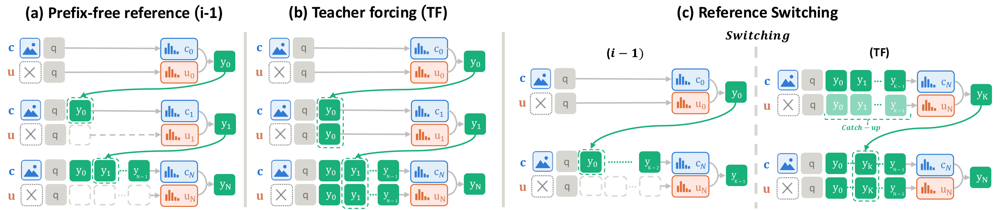
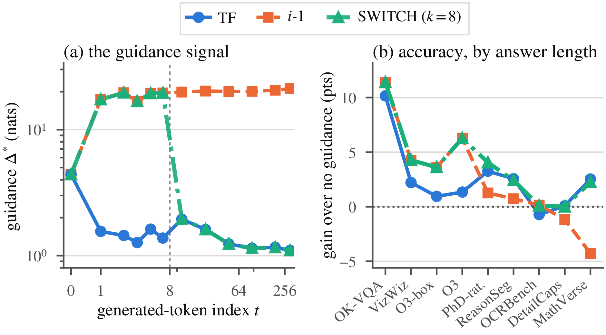
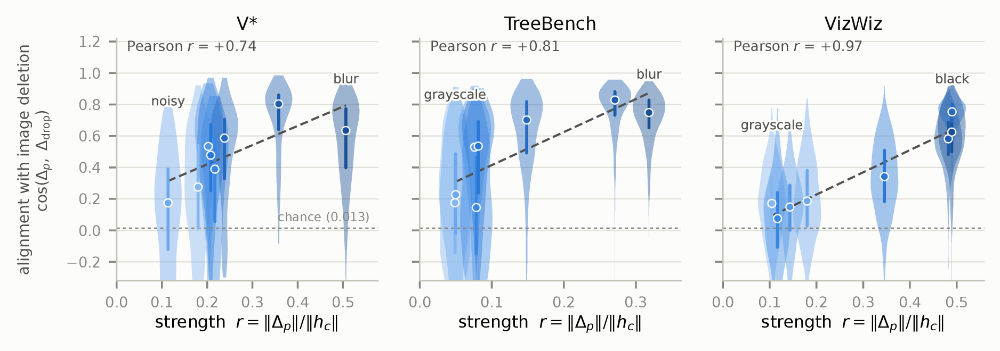
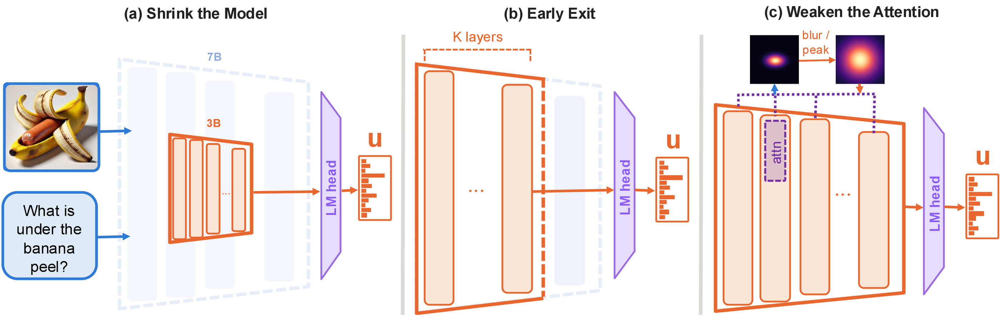

Abstract
Classifier-free guidance runs a model with and without its condition and pushes the prediction away from the unconditional one. It is standard in image and video generation, where even the largest models rely on it, yet recent vision-language models (VLMs) do not use it when decoding. The closest existing approach is visual contrastive decoding, a large family of methods that contrast the model's prediction with a weakened stream built from a noised image, a distorted prompt or no image at all. We show that each such method is classifier-free guidance with its own negative stream, yet each was proposed in isolation and evaluated almost exclusively on hallucination benchmarks. Unifying them turns them into one design space and lets us import the mature guidance literature of diffusion, from autoguidance to adaptive projected guidance. Most of these methods, however, do not survive autoregressive decoding, where each guided step is read once and an early mistake cannot be corrected. One key finding is that no negative stream we build beats simply deleting the image, and that under greedy decoding the update rules of diffusion provably reduce to a change of guidance scale. One idea does carry over, scheduling guidance along the trajectory, and autoregression gives it a new target. The stream without the image must read some part of the answer, a choice that diffusion never faces and that existing methods leave implicit. Scheduling this reference, the autoregressive counterpart of the guidance schedules of diffusion, keeps guidance strong while the answer is being decided and lets it fade as the answer unfolds. Without training or per benchmark tuning, the resulting decoder adds 5.7 points to Qwen2.5-VL-7B and 1.7 to Qwen3-VL-8B on ten general benchmarks and outperforms four published contrastive decoders, at 1.04× the cost of unguided decoding against about 2× for the strongest of them.
Contrastive Decoding Is Classifier-Free Guidance
Classifier-free guidance is how generative models are sampled: the model runs twice at every step, once with the prompt and once without, and extrapolates away from the second. Every large text-to-image and video system ships with it; unified models make the asymmetry plain, guiding when they draw an image and not when they answer a question. Visual contrastive decoding subtracts the model's prediction on a noised image, and dozens of methods since differ in what the second stream sees.
Contrastive decoding is not a relative of classifier-free guidance. It is classifier-free guidance, with a particular reference.
One equation
With \(v\) the image, \(h = (q, y_{<t})\) the question and the answer so far, \(\ell_c = \log p(\cdot \mid v, h)\) the conditional stream, and \(\ell_u\) the same prompt with the image removed, the image-free stream, guidance is
and \(\alpha = 1\) is plain decoding.
An implicit image classifier
Classifier guidance needs a separately trained classifier; Ho and Salimans observe that Bayes' rule already contains one, so a single model run with and without its condition plays both roles. A vision-language model is exactly such a model. Were the image-free pass the true marginal \(\bar p(y \mid h) = \mathbb{E}_{v \sim p(v \mid h)}\, p(y \mid v, h)\), Bayes' rule would turn the bracket into the pointwise mutual information between the candidate token and the image:
The implicit classifier of classifier-free guidance becomes an implicit image classifier. Classifier-free guidance for a vision-language model pushes each token by how much evidence it carries about the image.
One operator, many references
The operator is the geometric tilt \(\tilde p \propto p_c^{\alpha}\, p_u^{1-\alpha}\). On two Gaussians with a shared variance, a diffusion reverse step, it returns the classifier-free guidance update; on two categorical distributions, a vision-language model's next token, it returns Eq. (1). The two are not analogous; they are one operator applied to two families. No published reference is the marginal \(\bar p\), and writing \(q(y)\) for whatever a method subtracts, the bracket splits exactly as
so every contrastive decoder applies the same tilt and differs only in the bias \(b_q\). The question worth asking is which reference.
Diffusion's toolkit becomes available
Naming these methods as guidance lets us import what diffusion has matured: what the negative stream sees, how to reshape the update, and how to schedule its strength along the trajectory.
The methods meet on common ground
Contrastive decoding fixes one point per paper and tests it on hallucination benchmarks with backbones two generations old. On common ground, PAI's attention edit adds nothing a larger guidance scale does not already provide.
Autoregression reads every step once
A diffusion sampler corrects small errors over many steps. An autoregressive model reads its guided vector once, into an argmax, and a wrong first word cannot be undone.
What Survives Autoregressive Decoding
Diffusion treats guidance as a design space: what the negative stream sees, how to reshape the update, and how strongly and for how long to apply it. We take that toolkit whole and ask what survives autoregressive decoding, on Qwen2.5-VL-7B and benchmarks whose answers run from two tokens to several hundred. Most of it does not: every negative stream points towards deleting the image, and every operator reduces to a change of guidance scale. One axis has no diffusion counterpart, and it is where the gain is.
Where the reference stands decides the outcome
The teacher-forced reference leaks the answer and collapses after one token; the cached one never fades and overguides long answers. Switching between them takes the better of both, and single-token benchmarks cannot see the difference.
The reference axis ↓No negative stream beats deleting the image
Every negative stream we built, from the pixels, from a weaker model or from degraded attention, either points towards image deletion or fails. Weakened attention reaches parity with deletion, and combining the two only rescales the guidance.
The negative stream ↓Every imported operator is a guidance scale
Every guidance operator imported from diffusion lands on the scale ladder, and none beats the best constant scale on any benchmark. The two that move the scale appreciably are a halving of it (TCFG) and guidance on the first token until the reference refreshes (CFG-Zero*).
The update geometry ↓Where the Reference Stands
The image-free stream sees the question and the answer so far, but not the image, so it predicts what the model would say without looking: the language prior. Subtracting it in Eq. (1) leaves each token with the evidence it carries about the image. In diffusion both branches see the same noisy sample. In an autoregressive VLM the image-free stream can be conditioned on any prefix of the answer, and the equation does not say which.

Two rules, opposite failures
At the first step the prefix is empty, so both rules coincide on single-token answers. Beyond it, they fail in opposite regimes.
Follows the answer, and leaks it
The field's silent choice, and the rule of visual contrastive decoding: the image-free stream reads the tokens the guided model has just produced. That is text written about the image, handed to the stream meant to be blind to it. One generated token costs about two thirds of the guidance signal, and what remains sits below its own noise floor.
Reads the question once, and goes stale
The image-free stream runs once, when the model has read the whole input and none of the answer, and its prediction is reused throughout: \(N\) tokens take \(N + 1\) passes, against \(2N\) for tf. Its push never fades. On a short answer that helps; on a long one every correction is reapplied at every later step, and the answer drifts.
Switching the reference inside one answer
Diffusion meets the same tension along its trajectory and resolves it by scheduling the guidance strength over time. The reference gives an autoregressive model a schedule of its own. tf's leak is not only a defect: because the reference has read the prefix, its remaining push measures how much the image still matters at this token. Once the text has fixed the answer, the reference agrees and guidance vanishes. switch uses each rule where it is right.
Prefix-free reference
Full strength while the answer is being decided. On answers shorter than \(K\) the switch never fires, and guidance costs one extra pass.
Teacher-forced reference
The reference catches up on the prefix in one pass, after which guidance fades token by token as the answer unfolds.
The switch point \(K\) is the only hyperparameter. We set \(K = 8\) from answer-length statistics before reading any score; any \(K\) from 4 to 32 ties tf on MathVerse.
Each rule wins in its own regime
We expect i-1 to win on short answers and tf on long ones, and on Qwen2.5-VL-7B the benchmarks confirm both, with one exception the mechanism predicts. OCRBench v2 has long answers, yet tf costs 0.73 points there while i-1 is flat: reading text keeps every token dependent on the image, so the cached push lands on tokens the model already ranks first and changes nothing.

| Reference | OK-VQA | VizWiz | O3 | PhD-rat. | ReasonSeg | OCRBench | MathVerse | Overall |
|---|---|---|---|---|---|---|---|---|
| # tokens | 2.4 | 2.5 | 3.8 | 30.2 | 60.9 | 152.1 | 337.7 | |
| no guidance | 42.60 | 73.80 | 57.34 | 68.73 | 49.45 | 53.69 | 60.28 | 57.98 |
| tf | 52.76 | 76.01 | 58.68 | 71.98 | 52.01 | 52.96 | 62.82 | 61.03 |
| i-1 | 54.00 | 78.06 | 63.61 | 69.99 | 50.18 | 53.83 | 56.01 | 60.81 |
| i-1 +oracle | 54.60 | 78.46 | 56.91 | 68.33 | 51.29 | 52.41 | 61.55 | 60.51 |
| i-1 +decay | 54.64 | 78.49 | 58.96 | 69.72 | 50.91 | 53.83 | 58.83 | 60.77 |
| switch (ours) | 54.00 | 78.06 | 63.61 | 72.78 | 51.86 | 53.77 | 62.54 | 62.37 |
Short answers favour i-1. On every benchmark whose answer is shorter than five tokens, i-1 beats tf, by up to 4.93 points. The strong cached push, and the pressure to stop that it creates, is what helps: on O3, i-1 stops after the first label in 90% of answers, which lifts F1 from 58.68 to 63.61.
Long answers favour tf, and the drop is the leak. On MathVerse i-1 falls 6.81 points below tf and 4.27 below no guidance. With length and step fixed, \(\Delta^\star\) falls from 18.35 nats with no prefix to 15.05 with another document's prefix, 7.55 with this document's tokens shuffled, and 1.48 with its real prefix.
Strength, not direction, is what goes wrong. The strength oracle keeps the i-1 direction but gives it tf's per-token strength, and recovers tf on long answers (MathVerse 61.55 against 62.82, ReasonSeg 51.29 against 52.01, both within noise). A fixed decay curve, which needs no second stream, falls 3.99 points short on MathVerse: the right strength after the first tokens has to be read token by token from the teacher-forced stream. switch does exactly this. It follows the better rule at every answer length and beats both on average, 62.37 against 61.03 for tf and 60.81 for i-1.
The Negative Stream
Classifier-free guidance drops the condition, which for a vision-language model means deleting the image. Contrastive decoding corrupts the image instead, and autoguidance weakens the model. Neither beats deletion.
Degrading the input
We tested a wide range of corruptions: black, resized and blurred images, and noised, masked, grayscale, patch shuffled and colour-inverted ones. All of them produce a guidance vector whose alignment with deletion's is far above chance, and that alignment rises with the strength of the corruption. The constructions form a cone that closes onto deletion, with the noised image of visual contrastive decoding as its weakest point.

The guidance scale cannot turn one construction into another, because it absorbs the length of a construction's vector but never its angle. Matching deletion's step gives
with a residual proportional to \(\sin\theta\). Deletion is the only construction with nothing to tune, and the cheapest, since its negative pass carries no image tokens.
Degrading the model
Autoguidance proposes a different negative: a weaker copy of the same model, which reproduces the conditional's errors more strongly and so isolates the direction worth following. Diffusion can accumulate a small difference over many denoising steps; here, each step is read once.

| Negative stream | VizWiz | BLINK IQ | MME-RW |
|---|---|---|---|
| Unguided | 73.80 | 24.67 | 41.38 |
| Image deletion (switch) | 78.06 | 28.67 | 45.86 |
| Early exit, layer 15 | 73.57 | 24.67 | 39.81 |
| Smaller, 3B | 69.79 | 24.00 | 41.01 |
| MUL, \(\gamma = -0.5\) | 75.54 | 27.33 | 45.81 |
| SEG | 75.22 | 27.33 | 47.47 |
| Soft PAG, \(\lambda = 0.25\) | 76.83 | 26.67 | 41.12 |
| PAG, \(\lambda = 1.0\) | 77.16 | 28.67 | 40.33 |
| Over-blur, \(a = -0.5\) | 77.16 | 26.67 | 46.64 |
| Masked (\(-\infty\)) | 77.76 | 26.67 | 43.51 |
A weaker model misses on both sides. The 3B negative is too close to the model to move an argmax, and VizWiz falls to 69.79. The early exit is too far: its top token never matches the conditional's, on any of the 1,727 documents we checked, so it is a different model rather than a weaker one.
Weakened attention reaches parity, not more. On VizWiz and BLINK every edit improves on unguided decoding, but against a tuned deletion none does better than a tie. Even masking every score leaves the image's marker tokens, positions and cache entries, all of which deletion removes.
The mirage of composition. Weakened attention and deletion degrade different things, so it is tempting to use both. Choosing the better of the two per document with hindsight gains 1.86 points, but no combination captures it: the best recovers 0.15 points, and of 37 benchmark and combiner pairs, 3 are significant wins and 7 significant losses. Every combination lands on the scale curve of deletion alone. A second negative is a larger guidance scale in disguise.
The Geometry of the Update
The diffusion literature reshapes the guidance update to repair oversaturated images and samples off the data manifold. We import four widely used operators: APG, CFG-Zero*, TCFG and EP-CFG.
Every such operator is a guidance scale
Each of them returns a weighted sum of the same two logit vectors, \(\tilde\ell = a\,\ell_c + b\,\ell_u\), with \(a > 0\). A greedy decoder takes an argmax, which cannot see a positive rescaling, so
The two weights reach the decision only through their ratio, and vanilla guidance produces the same ratio at the scale \(\alpha_{\text{eff}}\). Composing operators does not escape this: a composition is again a weighted sum of the two streams. We prove it and confirm it on 86,392 decoding steps.
An operator that stays in the span of the two streams is a schedule for the guidance scale.
Because \(\alpha_{\text{eff}}\) depends only on the two streams, we can read it off the model and name what each operator actually does:
- EP-CFG is the identity. It scales both weights by one factor, leaves \(r\) unchanged, and in exact arithmetic runs at \(\alpha\).
- APG is a relabelled constant. It shifts the scale by about 0.1 and holds it there.
- TCFG is a strength rule. With equal norms it keeps the streams' bisector, giving \(\alpha_{\text{eff}} = (\alpha + 1)/2\) whatever the angle between them; we measure 1.251 against the predicted 1.25.
- CFG-Zero* is a duration rule. Its fitted coefficient is 0.77 to 0.99 at the first token and falls to zero once the answer starts, so it guides the first token and then nothing until the reference refreshes.
Against the scale ladder
Averaged over five benchmarks, the default scale, TCFG, EP-CFG and APG with \(\eta = 2\) score 64.02, 64.02, 64.00 and 64.18: three published operators and the default, one number. Single cells do move, but no operator is significantly better than the best constant \(\alpha\) on any benchmark.
| Operator | VizWiz | O3 | PhD-rat. | ReasonSeg | OCRBench | Overall |
|---|---|---|---|---|---|---|
| unguided, \(\alpha = 1\) | 73.80 | 57.34 | 68.73 | 49.45 | 53.69 | 60.60 |
| switch, \(\alpha = 1.5\) | 78.06 | 63.61 | 72.78 | 51.86 | 53.77 | 64.02 |
| APG, \(\eta = 0.5\) | 77.59 | 63.15 | 72.18 | 51.65 | 54.11 | 63.74 |
| APG, \(\eta = 2\) | 78.43 | 64.13 | 72.84 | 51.67 | 53.82 | 64.18 |
| CFG-Zero* | 78.70 | 56.15 | 71.05 | 51.95 | 54.01 | 62.37 |
| TCFG | 78.11 | 65.61 | 71.18 | 51.35 | 53.87 | 64.02 |
| EP-CFG | 78.01 | 63.68 | 72.18 | 51.84 | 54.30 | 64.00 |
The nearest miss is a better rung. On O3, TCFG beats the default scale by 2 points, but the best rung of the ladder, \(\alpha = 1.25\), by only 0.34, which is not significant. On VizWiz, TCFG's answers match those of \(\alpha = 1.25\) on 96.6% of documents.
A duration rule fails where duration matters. CFG-Zero* holds on VizWiz and ReasonSeg, where the answer is decided early. It loses 1.73 points on the 30-token rationales of PhD, and on O3, whose gain lies in the stop decision, it falls 7.46 points, below unguided decoding.
The imported toolkit adds no direction. It rediscovers the two knobs the reference already gives us: how strong the push is, and how long it lasts.
Results
One configuration, fixed in advance
VLM-CFG is the design the analysis arrives at. It is fixed in advance and never tuned per benchmark or per model:
- Negative stream: delete the image.
- Blend site: the last hidden state, which the linear readout makes equivalent to blending the logits.
- Reference: switch at \(K = 8\).
- Scale: \(\alpha = 1.5\) throughout.
Every run uses lmms-eval with greedy decoding and each benchmark's default prompt, on five models
from three families at 3B to 8B, against four contrastive decoders (VCD, M3ID, PAI and SID) at their published
settings.
Main results
| Method | OK-VQA | VizWiz | O3 | O3-box | PhD | MMStar | TreeBench | BLINK IQ | V* | MME-RW | Overall | Cost |
|---|---|---|---|---|---|---|---|---|---|---|---|---|
| Qwen2.5-VL-3B (unguided) | 40.84 | 67.75 | 62.88 | 62.91 | 73.09 | 56.47 | 40.25 | 23.33 | 71.73 | 38.04 | 53.73 | 1.00× |
| + VCD | 43.48 | 66.43 | 59.25 | 60.26 | 74.43 | 55.26 | 36.30 | 24.00 | 68.59 | 39.45 | 52.75 | 1.96× |
| + M3ID | 41.28 | 67.76 | 61.24 | 60.51 | 73.63 | 56.79 | 40.99 | 8.00 | 71.73 | 36.74 | 51.87 | 1.08× |
| + PAI | 46.48 | 67.10 | 64.30 | 65.34 | 74.84 | 55.91 | 40.49 | 24.67 | 71.20 | 37.88 | 54.82 | 2.05× |
| + SID | 47.92 | 70.07 | 62.49 | 65.76 | 76.14 | 56.96 | 39.26 | 24.00 | 71.20 | 42.63 | 55.64 | 2.00× |
| + VLM-CFG (ours) | 51.96 | 72.34 | 63.10 | 65.07 | 77.12 | 56.76 | 38.27 | 30.67 | 71.73 | 44.50 | 57.15 | 1.04× |
| Qwen2.5-VL-7B (unguided) | 42.36 | 73.49 | 57.39 | 60.24 | 67.50 | 62.43 | 40.74 | 25.33 | 70.16 | 39.24 | 53.89 | 1.00× |
| + VCD | 47.24 | 74.37 | 55.52 | 59.80 | 70.90 | 61.73 | 41.98 | 26.67 | 70.16 | 42.42 | 55.08 | 1.96× |
| + M3ID | 42.16 | 75.06 | 55.61 | 57.73 | 67.51 | 58.01 | 37.04 | 2.67 | 70.68 | 46.17 | 51.26 | 1.08× |
| + PAI | 50.68 | 75.81 | 65.28 | 67.29 | 70.49 | 62.26 | 41.48 | 28.00 | 70.16 | 41.84 | 57.33 | 2.05× |
| + SID | 48.24 | 73.49 | 56.74 | 61.74 | 73.04 | 61.19 | 41.73 | 26.67 | 72.25 | 45.49 | 56.06 | 2.00× |
| + VLM-CFG (ours) | 54.00 | 78.01 | 63.94 | 65.86 | 79.15 | 62.17 | 42.96 | 29.33 | 73.30 | 47.11 | 59.58 | 1.04× |
| Qwen3-VL-4B (unguided) | 48.32 | 80.05 | 51.04 | 52.65 | 74.47 | 63.12 | 43.21 | 28.67 | 72.25 | 45.34 | 55.91 | 1.00× |
| + VCD | 47.84 | 76.82 | 51.48 | 53.90 | 74.38 | 57.96 | 45.93 | 31.33 | 75.39 | 46.59 | 56.16 | 1.96× |
| + M3ID | 48.68 | 80.05 | 51.04 | 52.65 | 74.47 | 57.44 | 43.21 | 28.67 | 72.77 | 45.34 | 55.43 | 1.08× |
| + PAI | 48.60 | 76.79 | 51.06 | 54.64 | 76.11 | 57.45 | 43.95 | 32.00 | 72.77 | 47.00 | 56.04 | 2.05× |
| + SID | 48.92 | 78.19 | 53.17 | 57.00 | 76.16 | 57.12 | 43.70 | 30.00 | 76.96 | 47.16 | 56.84 | 2.00× |
| + VLM-CFG (ours) | 49.88 | 79.50 | 52.22 | 56.56 | 77.12 | 56.91 | 44.69 | 30.67 | 74.35 | 46.74 | 56.86 | 1.04× |
| Qwen3-VL-8B (unguided) | 52.96 | 81.06 | 59.62 | 70.61 | 74.52 | 60.16 | 44.69 | 28.00 | 79.06 | 46.12 | 59.68 | 1.00× |
| + VCD | 51.76 | 79.28 | 60.28 | 70.76 | 74.46 | 59.50 | 44.69 | 28.67 | 81.15 | 48.51 | 59.91 | 1.96× |
| + M3ID | 52.68 | 81.09 | 59.63 | 70.49 | 74.65 | 60.20 | 45.68 | 26.67 | 78.53 | 46.22 | 59.58 | 1.08× |
| + PAI | 51.72 | 79.71 | 62.09 | 71.08 | 76.22 | 61.97 | 44.44 | 30.00 | 79.58 | 47.37 | 60.42 | 2.05× |
| + SID | 51.60 | 80.95 | 62.30 | 72.64 | 77.55 | 60.77 | 46.42 | 28.00 | 76.96 | 47.99 | 60.52 | 2.00× |
| + VLM-CFG (ours) | 52.36 | 81.13 | 63.80 | 72.43 | 79.01 | 61.16 | 45.19 | 30.67 | 79.58 | 48.62 | 61.40 | 1.04× |
| InternVL3.5-8B (unguided) | 40.68 | 62.46 | 60.42 | 63.15 | 72.34 | 66.05 | 41.98 | 29.33 | 73.30 | 50.55 | 56.03 | 1.00× |
| + VCD | 40.36 | 62.25 | 58.76 | 61.53 | 73.61 | 65.22 | 42.96 | 29.33 | 72.25 | 49.92 | 55.62 | 1.96× |
| + M3ID | 40.20 | 62.55 | 60.10 | 62.53 | 72.34 | 66.05 | 41.98 | 29.33 | 73.30 | 50.55 | 55.89 | 1.08× |
| + PAI | 41.60 | 62.27 | 62.35 | 65.08 | 73.52 | 66.22 | 41.23 | 29.33 | 73.30 | 50.55 | 56.54 | 2.05× |
| + SID | 43.24 | 62.39 | 58.67 | 61.81 | 75.55 | 66.33 | 43.21 | 29.33 | 73.82 | 52.06 | 56.64 | 2.00× |
| + VLM-CFG (ours) | 45.40 | 62.45 | 58.36 | 61.37 | 76.68 | 67.05 | 41.73 | 29.33 | 68.59 | 50.03 | 56.10 | 1.04× |
The strongest arm, at one scale everywhere. VLM-CFG gains 5.69 points over the unguided Qwen2.5-VL-7B, against 3.44 for the best published method, and 1.72 on Qwen3-VL-8B, whose unguided score of 59.68 already exceeds what any of the four baselines reaches on Qwen2.5-VL-7B. Qwen2.5-VL-3B behaves like the 7B, at 3.42 points against 1.91.
The baselines split in two. PAI and SID, which act on the conditional stream, gain on every model. VCD loses on two models of five, as expected of the weakest point of the corruption cone. M3ID is below the unguided model on all five, on Qwen2.5-VL-7B almost entirely through BLINK, where it collapses to 2.67 against 25.33.
One model does not follow: on InternVL3.5-8B guidance is worth 0.07 points, and both PAI and SID edge past it.
Guidance versus reasoning
On PhD-CCS, the counter-common-sense split of the PhD hallucination benchmark, prompting the same models to reason before answering is worth at most 0.72 points, while guidance adds 2.65 to 11.65.
| Qwen2.5-VL-3B | Qwen2.5-VL-7B | Qwen3-VL-4B | InternVL3.5-8B | |
|---|---|---|---|---|
| no guidance | 73.09 | 67.50 | 74.47 | 72.34 |
| reasoning | 73.81 | 68.20 | 74.73 | 72.10 |
| VLM-CFG (ours) | 77.12 | 79.15 | 77.12 | 76.68 |
The cheapest guided decoder
A guided decoder pays for its negative branch, and the four baselines do not pay alike. On the short answers of this suite, prefill included, VLM-CFG costs 1.04× unguided decoding.
| Method | Why the negative branch costs what it does | Cost |
|---|---|---|
| VCD | Re-encodes the image and carries every vision token | 1.96× |
| SID | Re-encodes the image and carries every vision token | 2.00× |
| PAI | Image-free, but its attention edit forces an eager kernel on the conditional stream | 2.05× |
| M3ID | Deletes the image, read teacher-forced at every step | 1.08× |
| VLM-CFG (ours) | Deletes the image; one cached pass until the switch fires | 1.04× |
Against M3ID the margin is four points of overhead, so we do not rest that comparison on cost. M3ID picks the right negative branch but leaves the reference rule unstated, pairing it with a weight that grows without bound in the token index, where our scale ladder finds no schedule that beats the best constant.
Limitations
One scale leaves gains on the table
The best scale differs from benchmark to benchmark, and picking it per benchmark beats our fixed choice. Picking it per sample should do better still, but our best adaptive rule needs an oracle, and no feature available at inference time reproduces it.
Deleting only the region that matters
Blacking out the annotated region beats deleting the whole image on two of the three benchmarks we tried, and matches it on the third. That is an upper bound, not a method: when the model predicts the region itself, the gain almost disappears.
One model does not gain
The same configuration transfers across two Qwen generations and four sizes, but on InternVL3.5-8B guidance is worth 0.07 points, and PAI and SID edge past it.
BibTeX
@article{abdelrahman2026contrastive,
title = {Contrastive Decoding Is Classifier-Free Guidance:
Unifying Visual Guidance for Vision-Language Models},
author = {Abdelrahman, Eslam and Alkaf, Hamza Omar and Guerrero, Paul and
Ceylan, Duygu and Li, Yuheng and Iyer, Siddharth Srinivasan and
Zhao, Nanxuan and Shechtman, Eli and Singh, Krishna Kumar and
Elhoseiny, Mohamed},
journal = {arXiv preprint},
year = {2026}
}